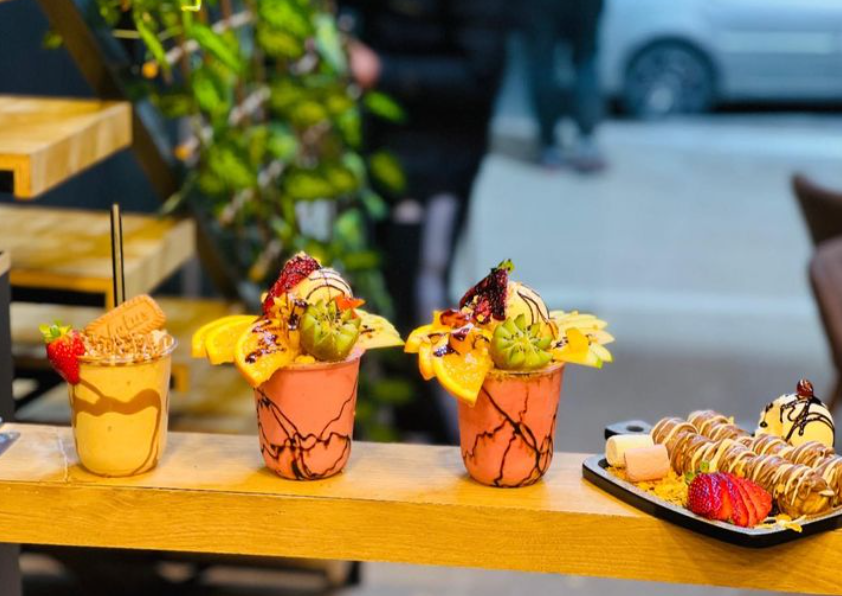
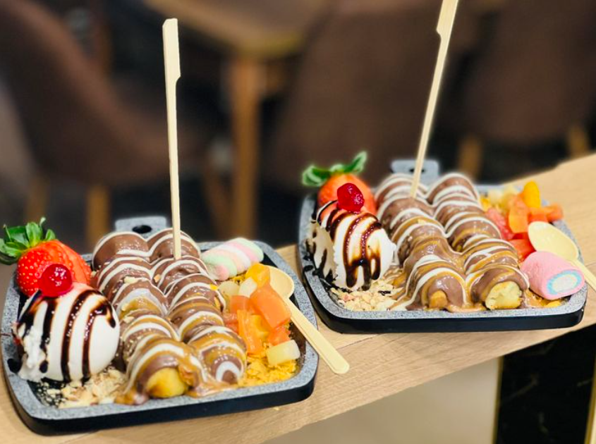
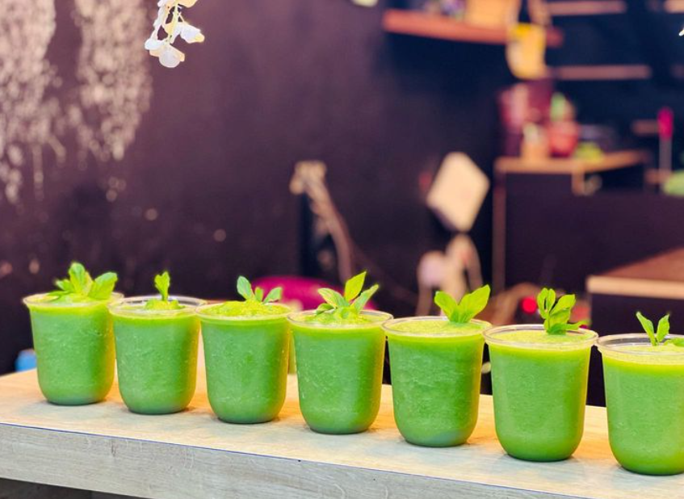

Julnar is a charming sweets restaurant located in Deir al-Ghusun, a village in Tulkarm. Known for its delicious traditional Middle Eastern desserts, Julnar has become a local favorite for both residents and visitors. The restaurant offers a variety of sweet treats, including freshly made baklava, kunafa, and other specialty pastries, all crafted with authentic flavors and high-quality ingredients. With its warm and welcoming atmosphere, Julnar provides a delightful experience for anyone looking to indulge in the rich and unique tastes of the region.
  